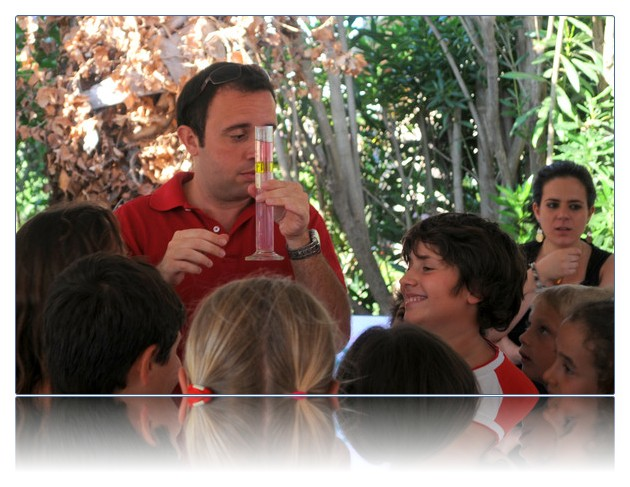

You are herescienza
scienza
Un mare di scienza

Dal 13 giugno all’8 luglio e dal 22 agosto al 16 settembre 2011, le associazioni PALERMOSCIENZA, Villa Filippina e Fondazione Progetto Legalità, promuoveranno il progetto “Un mare di scienza”, laboratori informali gioco-imparo incentrati su tematiche scientifiche e ideati per bambini dai 7 ai 12 anni.
Durante i laboratori, che si terranno presso la sede di Villa Filippina a Palermo, animatori specializzati coinvolgeranno i bambini rendendoli attori delle loro scoperte e delle loro creazioni, e stimoleranno a partire dalla manualità la voglia di imparare, di comprendere e di comunicare.
Cinque settimane di laboratori, su temi diversi, che si terranno ogni giorno dal lunedì al venerdì, dalle 9.00 alle 13.00 (con possibilità per i genitori di consegnare i propri figli presso la struttura già a partire dalle 08.30).Ciascun laboratorio è auto-consistente in modo tale che i singoli partecipanti possano inserirsi in qualsiasi giorno trovando sempre cose interessanti da fare.
Per informazioni e preiscrizioni chiamare:
segreteria associazione 3668028227 - lunedì, martedì, giovedì dalle ore 10,00 alle ore 13,00
e cliccare qui:
- Programma
- Informazioni tecniche
- Scheda di iscrizione
- Liberatoria foto
- Depliant informativo da stampare

 |
 |
 |
 |
 |
 |
La giostra della scienza - XX settimana della culttura scientifica e tecnologica
La settimana che va dal 18 al 24 ottobre, sarà la XX settimana della culttura scientifica e tecnologica. Il titolo dell'evento di quest'anno è "La giostra della scienza".
Scienza a 360°, da momenti di svago per famiglie e gruppi con giochi basati su conoscenze scientifiche e tecnologiche, a momenti di riflessione sull’importanza della scienza e dell’innovazione tecnologica nello sviluppo economico.
Attività
Giochi e scienza, giochi a squadre basati su conoscenze e competenze di base scientifiche:
- gincana, gioco a squadre costituite da adulti e bambini della durata di circa 1 ora. Lesquadre si confronteranno su un percorso mentale accidentato e dovranno superare ostacoli costituiti da semplici esperimenti e domande su argomenti scientifici
- gioco dell’oca, gioco di percorso in cui i passi sono correlati alle risposte date dalla squadra
a domande in diversi ambiti scientifici - cosa c’è sotto, un oggetto misterioso di cui si dovrà scoprire il nome si trova sotto a caselle
di un puzzle, le caselle verranno scoperte con la risposta esatta ad una domanda.
Esperienze "real time", spazio dedicato alle nuove tecnologie, dove si effettueranno esperimenti con uso di interfaccia, osservazioni di fenomeni con registrazione, lettura e interpretazione di dati.
Imprenditorialità e scienza, seminario per giovani e adulti di presentazione di imprese caratterizzate da innovazione tecnologica.
Calendario
Martedì 19 ottobre IC Cruillas, via Salerno 19 Palermo
9,30 - 13,00 / 15,00 -18,00 giochi e scienza, esperienze "real time"
Giovedì 21 ottobre I C Florio, via Filippo Di Giovanni 88 Palermo
16.30 - 19,00 giochi e scienza, esperienze "real time"
Venerdì 22 ottobre SMS Vittorio Emanuele III, via CesareTerranova 93 Palermo
9,30 - 13,00 giochi e scienza, esperienze "real time"
Venerdì 22 ottobre Consorzio ARCA Consorzio per le Applicazione della Ricerca e la
Creazione di Aziende innovative - viale delle Scienze, Edificio 16
16,00 – 18,00 Imprenditorialità e scienza.
Informazioni
Per maggiori informazioni scrivere all'indirizzo segreteria@palermoscienza.it.
La giostra della scienza - XX settimana della culttura scientifica e tecnologica
marediscienza: laboratori gioco-imparo per imparare comprendere e comunicare la scienza
 L'associazione PALERMOSCIENZA organizza marediscienza: laboratori informali gioco-imparo nei quali animatori specializzati, coinvolgeranno i bambini rendendoli attori delle loro scoperte e delle loro creazioni, e stimoleranno a partire dalla manualità la voglia di imparare, di comprendere e di comunicare.
L'associazione PALERMOSCIENZA organizza marediscienza: laboratori informali gioco-imparo nei quali animatori specializzati, coinvolgeranno i bambini rendendoli attori delle loro scoperte e delle loro creazioni, e stimoleranno a partire dalla manualità la voglia di imparare, di comprendere e di comunicare.
Due settimane di laboratori su temi diversi, ogni pomeriggio dal lunedì al venerdì un tema. I temi vengono ripresi nella seconda settimana, ciascun laboratorio è autoconsistente in modo tale che i singoli partecipanti possono inserirsi in qualsiasi giorno trovando sempre cose nuove da fare.
Date: 28-29-30 Giugno 2010 e 1-2/5-6-7-8-9 Luglio 2010
Sede: Marsala (TP) - Tennis club "Città dei Mille"
Temi:
- Suono, musica e fisica
- Luce, colore e visione
- Terra, luna e sole
- Vita in una manciata di terra
- Chimica per ogni giorno
Destinatari: bambini dai 5 ai 10 anni in gruppi di 20 persone.
L’attività si può rivolgere anche a piccoli di scuola materna e nonni.
Tempi: 3 ore per ogni laboratorio.
Spazio: Aula attrezzata di almeno 50 m2
Informazioni e prenotazioni: 3346910936
La Terra: istruzioni per l’uso
Mercoledì 5 maggio 2010, ore 16.30, presso l'Aula Magna dell’Istituto Magistrale “Regina Margherita” di Palermo, si terrà l'incontro "La Terra: istruzioni per l’uso. Il futuro del nostro pianeta tra memoria e profezia."
Interverrà il geologo e ricercatore Mario Tozzi
Scarica il comunicato stampa e l'invito.
Proposta per la costituzione di una rete per la scienza a Palermo
Sabato 20 febbraio alle ore 10, presso l'Aula del Polididattico, l’associazione PALERMOSCIENZA, presenterà una proposta una proposta per la costituzione di una rete per la scienza a Palermo.
interverranno
Roberto Lagalla
Rettore dell’Università di Palermo
Giuseppe Marucci
Ispettore del MIUR
Marcellina Profumo
Presidente dell’Associazione PALERMOSCIENZA
introduce e coordina
Salvatore Cusimano
Direttore Sede regionale RAI-Sicilia
Teatro Scienza 2008
 Teatro Scienza 2008 è "un evento dedicato alle esperienze contemporanee che indagano il rapporto tra palcoscenico e cultura scientifica".
Teatro Scienza 2008 è "un evento dedicato alle esperienze contemporanee che indagano il rapporto tra palcoscenico e cultura scientifica".
In questo contesto saranno realizzate lezioni spettacolo, laboratori formativi, incontri ed un concorso online per le scuole (dalle elementari all'università).